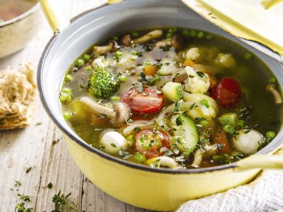

Minestrone maaltijdsoep

Ingrediënten
- 3 sjalotten
- 3 wortelen
- 1 bloemkool
- 20 kerstomaten
- 150 g champignons
- 2 blaadjes laurier
- olijfolie
- 1 broccoli
- 1 courgette
- 100g erwten
- 50 g risoni
- 3l groentebouillon
- 1 handje tijm
- peper en zout
Bereiding
- Maak de broccoli en de bloemkool schoon en verdeel in roosjes. Kook ze afzonderlijk beetgaar en spoel ze in ijswater.
- Schil de wortelen, spoel de courgette en snij ze beide in blokjes. Pel de sjalotten en snipper fijn.
- Stoof dan de gesnipperde sjalot aan in olijfolie en voeg er de wortelen en de courgetteblokjes aan toe. Kruid met peper, zout, tijm en laurier. Giet de groentebouillon en de risoni bij de groenten en laat 10 tot 15 minuten verder garen.
- Halveer de kerstomaatjes en voeg ze samen met de champignons en de erwtjes toe op het einde van de gaartijd toe.